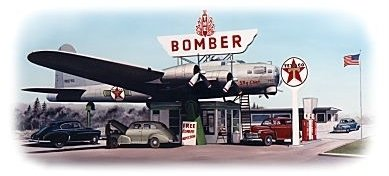
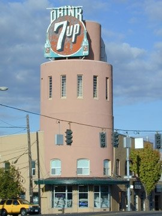
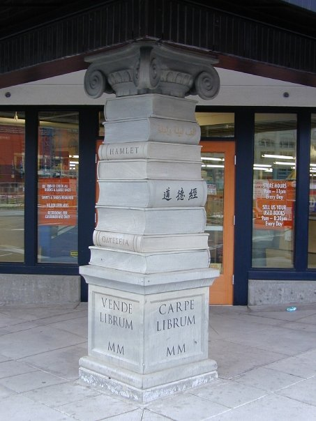
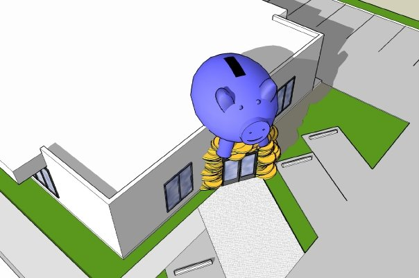

Whimsical Roadside Architecture uses a common object to form a building or part of a building. The object may
represent the business, but not always. This is the most delightful of Roadside works. To be Whimsical, the
object does not need to form the entire building, but can simply be incorporated into the design. Do you know a
building that fits this category? Let us know! Send us a picture or link.

Looking south on NE 41st towards the Hollywood Theatre. Note the windmill. These buildings served to
house the original Fred Meyer's Hollywood location before building the modern building with rooftop
parking that we see today.

At the base of the windmill at the original Hollywood Fred Meyer.

View along Sandy Boulevard of the original Hollywood Fred Meyer. Freddy originally offered automobile
lube and oil change at this location. Is it possible the windmill was part of a gas station similar to
the Dutch Village on Terwilliger?

The Bomber Gas Station in Milwaukie, Oregon. Art Lacey flew the B-17 from an Air Force Base in 1947. That
is Art, the proud pilot and owner.

When Art Lacey did his test flight at the Oklahoma Air Base, he needed a co-pilot, but he had traveled
alone. So, he put a mannequin in the co-pilot's seat and took off. Since the co-pilot is the only person
who can lower the landing gear, Art crashed the plane and also destroyed another one on the ground in
the process. The Air Force wrote it off as wind damage.

When Art took off across the country (With a real co-pilot this time) he ran into a snow storm between
Palm Springs and Klamath Falls. He dropped down under the clouds to follow the rail road tracks so he
could navigate. While following the railroad tracks in the snow storm, the co-pilot was in the nose cone
and would shout "Tunnel!" whenever a tunnel was spotted so Art could gain altitude and go over the
mountain!
When Art piloted his the Bomber from Oklahoma, he landed his B-17 at the Troutdale Airport, but could not
obtain a permit to transport the plane to Milwaukie. So, late one Saturday evening, he just drove it
down
the highway. All he received was a $10 ticket for an oversize load. Quite the bargain!

The bomber is currently being refurbished. Donations are always appreciated.

The Bomber in its hey day. The Bomber was more than simply a gas station. It was a landmark
destination.
The Coon Chicken originated in Salt Lake City. In the 1930's the restaurant expanded to Portland and
Seattle. The building is at 52nd and Sandy Boulevard and houses Cylde's Prime Rib.
It was not intended to be racist. The smiling winking face was created to attract children and families,
and was featured on the front door, menus, and every paper product. These are highly collectible and
knock-offs abound so be careful.

1929 Dutch Village service station on Terwilliger near Bertha. All the buildings were representational of
the theme, but the windmill is the memorable and whimsical feature.

The unique Shoe Service company was located on NE 21st on Sandy Blvd. They repaired shoes and garments.
While adding color to the original black and white image, the photo editor zoomed into the picture and
was very startled when she panned over the windows and saw a rather creepy man staring back at her. Do
you see him?

The artful execution of the shoe including heel loop and laces made this a wonderful example of whimsical
roadside architecture.
Oscar's Silk Hat on MLK (Union Avenue) south of Killingsworth. Although the whimsical feature is only
over the front door, it creates a memorable image for the entire building.
The silk hat formed the shape of the menu.
Whiskey Barrel Diner on 82nd Avenue. A McDonalds now stands in its place. The barrels were actually
promoting Triple X Root Beer and served as a drive-in.

Steigerwald Dairy built in 1926 at NE 37th and Sandy Blvd. The dairy occupied the building for about 10
years. For awhile in the 1930s, a luncheonette occupied a space in the buildng and they naturally called
their business "The Milk Bottle Luncheonette."

The old Steigerwald Dairy's milk bottle was covered up by a cylinder and a 7-Up sign was placed on the
top. If you look closely though the slotted windows, you can see the shadow of the original milk bottle
which still remains.

Even though a Budweiser and then other business signs have replaced the 7-Up sign several years ago,
people still refer to the building as "The 7-Up Building".
Originally the Orange Blossom Luncheonette built in 1928 on NE 75th and Sandy Boulevard was a roadside
stop for hungry travelers. The vertical stripes were originally windows, but are now covered.

Sandy Boulevard was once the main highway drawing travelers from the east into Portland. This whimsical
work caught their attention and became a memorable respite.

Due to the well executed proportions, the building became known as the "Sandy Jug" for clearly obvious
reasons.
Successful whimsies pay close attention to the details as pictured here. Achieving the correct
proportions and accuracy of the original object are essential.

Currently the "Pirate's Cove", the building will always be known by locals as the "Sandy Jug".

So, let us hope the owner returns the "Sandy Jug" to its original luncheonette glory.

I understand that the fruit parapet of Cornos on SE MLK is in a warehouse and will be re-installed at the
original location when the city completes its sewer project. Does anyone know with certainty this will
happen?

The Nite Hawk on Interstate.
A modern example of whimsy at the Southpark Restaurant appropriately at SW 9th and Salmon.

Another touch of modern whimsy is at Powell's Books
A study by Perkins Architectural for a credit union. The client went for a more tradtional approach to
the exterior improvements to the existing building. Can you imagine all the free press and immediate
connection with the public if the credit union had elected to go forward with this concept?

The stack of coins would have made a nice pedestal for the piggy bank.

If its going to be done at all, it needs to be done with attention to detail. every piggy bank needs its
slot.

Postcard from the golden age of Roadside Architecture. Buy a ticket; Hop on the bus; See the sights!The
mushroom on the right was a gas station near 39th and Sandy Boulevard. If one has to choose where to buy
one's gas, why not opt for a giant fungus...Wouldn't everyone?!?